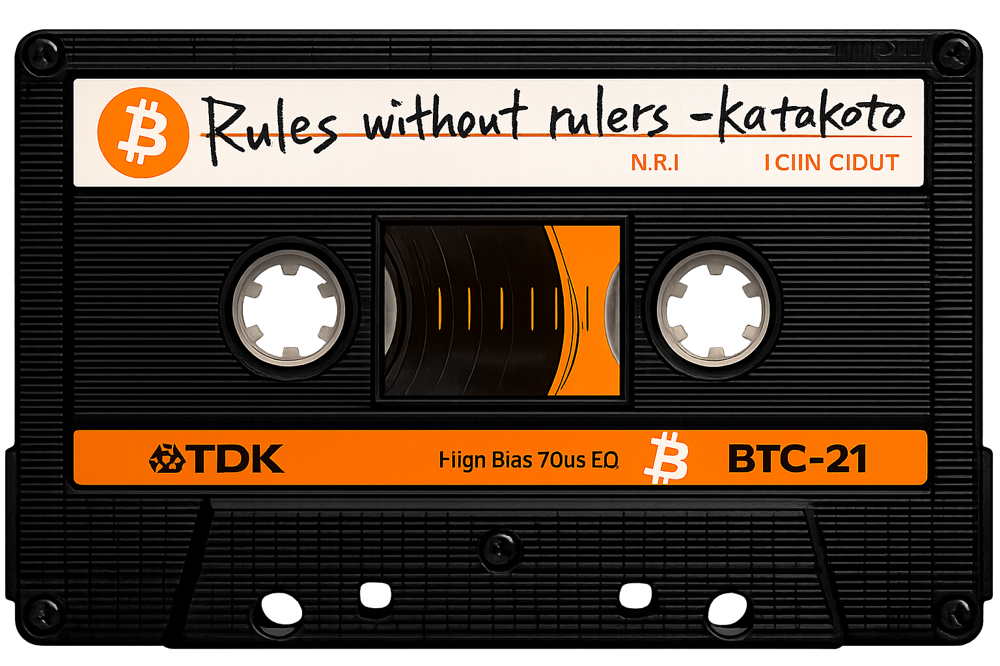

DUB
ME
★
ME
★
KATAKOTO TAPES // No.001
[ HOMEMADE / SOVEREIGN / DUB FREELY ]
// A BITCOIN CONCEPT ALBUM —
RULES
WITHOUT
RULERS
支配者のいないルール

SCROLL ↓ FOR LYRICS
— TRACKLIST/8 SONGS —
SIDE A
- お金のインターネット
- Don't Trust, Verify
- 支配者のいないルール
- Not Your Keys, Not Your Coins
SIDE B
- Cypherpank Writes Code
- 許可なんて要らない
- 銀行なき者たちへ
- 火を運ぶ者たち
— LYRICS —
↑ トラックをクリックして歌詞を表示
![tips@katakoto.org QR](data:image/svg+xml,%3Csvg%20width%3D%2231mm%22%20height%3D%2231mm%22%20version%3D%221.1%22%20viewBox%3D%220%200%2031%2031%22%20xmlns%3D%22http%3A//www.w3.org/2000/svg%22%3E%3Cpath%20d%3D%22M1%2C1H2V2H1zM2%2C1H3V2H2zM3%2C1H4V2H3zM4%2C1H5V2H4zM5%2C1H6V2H5zM6%2C1H7V2H6zM7%2C1H8V2H7zM9%2C1H10V2H9zM14%2C1H15V2H14zM15%2C1H16V2H15zM16%2C1H17V2H16zM19%2C1H20V2H19zM23%2C1H24V2H23zM24%2C1H25V2H24zM25%2C1H26V2H25zM26%2C1H27V2H26zM27%2C1H28V2H27zM28%2C1H29V2H28zM29%2C1H30V2H29zM1%2C2H2V3H1zM7%2C2H8V3H7zM11%2C2H12V3H11zM12%2C2H13V3H12zM13%2C2H14V3H13zM16%2C2H17V3H16zM18%2C2H19V3H18zM19%2C2H20V3H19zM23%2C2H24V3H23zM29%2C2H30V3H29zM1%2C3H2V4H1zM3%2C3H4V4H3zM4%2C3H5V4H4zM5%2C3H6V4H5zM7%2C3H8V4H7zM9%2C3H10V4H9zM11%2C3H12V4H11zM14%2C3H15V4H14zM18%2C3H19V4H18zM20%2C3H21V4H20zM23%2C3H24V4H23zM25%2C3H26V4H25zM26%2C3H27V4H26zM27%2C3H28V4H27zM29%2C3H30V4H29zM1%2C4H2V5H1zM3%2C4H4V5H3zM4%2C4H5V5H4zM5%2C4H6V5H5zM7%2C4H8V5H7zM10%2C4H11V5H10zM11%2C4H12V5H11zM12%2C4H13V5H12zM16%2C4H17V5H16zM17%2C4H18V5H17zM18%2C4H19V5H18zM21%2C4H22V5H21zM23%2C4H24V5H23zM25%2C4H26V5H25zM26%2C4H27V5H26zM27%2C4H28V5H27zM29%2C4H30V5H29zM1%2C5H2V6H1zM3%2C5H4V6H3zM4%2C5H5V6H4zM5%2C5H6V6H5zM7%2C5H8V6H7zM10%2C5H11V6H10zM16%2C5H17V6H16zM17%2C5H18V6H17zM19%2C5H20V6H19zM23%2C5H24V6H23zM25%2C5H26V6H25zM26%2C5H27V6H26zM27%2C5H28V6H27zM29%2C5H30V6H29zM1%2C6H2V7H1zM7%2C6H8V7H7zM9%2C6H10V7H9zM12%2C6H13V7H12zM13%2C6H14V7H13zM14%2C6H15V7H14zM15%2C6H16V7H15zM17%2C6H18V7H17zM18%2C6H19V7H18zM19%2C6H20V7H19zM21%2C6H22V7H21zM23%2C6H24V7H23zM29%2C6H30V7H29zM1%2C7H2V8H1zM2%2C7H3V8H2zM3%2C7H4V8H3zM4%2C7H5V8H4zM5%2C7H6V8H5zM6%2C7H7V8H6zM7%2C7H8V8H7zM9%2C7H10V8H9zM11%2C7H12V8H11zM13%2C7H14V8H13zM15%2C7H16V8H15zM17%2C7H18V8H17zM19%2C7H20V8H19zM21%2C7H22V8H21zM23%2C7H24V8H23zM24%2C7H25V8H24zM25%2C7H26V8H25zM26%2C7H27V8H26zM27%2C7H28V8H27zM28%2C7H29V8H28zM29%2C7H30V8H29zM12%2C8H13V9H12zM14%2C8H15V9H14zM20%2C8H21V9H20zM21%2C8H22V9H21zM1%2C9H2V10H1zM3%2C9H4V10H3zM7%2C9H8V10H7zM8%2C9H9V10H8zM14%2C9H15V10H14zM16%2C9H17V10H16zM17%2C9H18V10H17zM21%2C9H22V10H21zM24%2C9H25V10H24zM27%2C9H28V10H27zM29%2C9H30V10H29zM1%2C10H2V11H1zM2%2C10H3V11H2zM6%2C10H7V11H6zM8%2C10H9V11H8zM9%2C10H10V11H9zM10%2C10H11V11H10zM11%2C10H12V11H11zM13%2C10H14V11H13zM17%2C10H18V11H17zM18%2C10H19V11H18zM20%2C10H21V11H20zM21%2C10H22V11H21zM22%2C10H23V11H22zM23%2C10H24V11H23zM24%2C10H25V11H24zM27%2C10H28V11H27zM29%2C10H30V11H29zM1%2C11H2V12H1zM3%2C11H4V12H3zM4%2C11H5V12H4zM7%2C11H8V12H7zM10%2C11H11V12H10zM12%2C11H13V12H12zM13%2C11H14V12H13zM14%2C11H15V12H14zM15%2C11H16V12H15zM17%2C11H18V12H17zM20%2C11H21V12H20zM22%2C11H23V12H22zM23%2C11H24V12H23zM25%2C11H26V12H25zM26%2C11H27V12H26zM27%2C11H28V12H27zM29%2C11H30V12H29zM1%2C12H2V13H1zM3%2C12H4V13H3zM6%2C12H7V13H6zM9%2C12H10V13H9zM12%2C12H13V13H12zM13%2C12H14V13H13zM15%2C12H16V13H15zM16%2C12H17V13H16zM17%2C12H18V13H17zM19%2C12H20V13H19zM20%2C12H21V13H20zM25%2C12H26V13H25zM26%2C12H27V13H26zM28%2C12H29V13H28zM29%2C12H30V13H29zM1%2C13H2V14H1zM4%2C13H5V14H4zM6%2C13H7V14H6zM7%2C13H8V14H7zM8%2C13H9V14H8zM9%2C13H10V14H9zM10%2C13H11V14H10zM13%2C13H14V14H13zM14%2C13H15V14H14zM15%2C13H16V14H15zM21%2C13H22V14H21zM23%2C13H24V14H23zM24%2C13H25V14H24zM29%2C13H30V14H29zM1%2C14H2V15H1zM2%2C14H3V15H2zM5%2C14H6V15H5zM6%2C14H7V15H6zM9%2C14H10V15H9zM10%2C14H11V15H10zM14%2C14H15V15H14zM15%2C14H16V15H15zM19%2C14H20V15H19zM20%2C14H21V15H20zM21%2C14H22V15H21zM22%2C14H23V15H22zM23%2C14H24V15H23zM24%2C14H25V15H24zM26%2C14H27V15H26zM29%2C14H30V15H29zM7%2C15H8V16H7zM8%2C15H9V16H8zM9%2C15H10V16H9zM11%2C15H12V16H11zM12%2C15H13V16H12zM16%2C15H17V16H16zM19%2C15H20V16H19zM20%2C15H21V16H20zM22%2C15H23V16H22zM23%2C15H24V16H23zM24%2C15H25V16H24zM25%2C15H26V16H25zM26%2C15H27V16H26zM27%2C15H28V16H27zM29%2C15H30V16H29zM2%2C16H3V17H2zM3%2C16H4V17H3zM8%2C16H9V17H8zM9%2C16H10V17H9zM10%2C16H11V17H10zM11%2C16H12V17H11zM14%2C16H15V17H14zM22%2C16H23V17H22zM23%2C16H24V17H23zM24%2C16H25V17H24zM26%2C16H27V17H26zM28%2C16H29V17H28zM1%2C17H2V18H1zM6%2C17H7V18H6zM7%2C17H8V18H7zM8%2C17H9V18H8zM9%2C17H10V18H9zM13%2C17H14V18H13zM14%2C17H15V18H14zM16%2C17H17V18H16zM17%2C17H18V18H17zM20%2C17H21V18H20zM21%2C17H22V18H21zM23%2C17H24V18H23zM26%2C17H27V18H26zM28%2C17H29V18H28zM4%2C18H5V19H4zM6%2C18H7V19H6zM10%2C18H11V19H10zM11%2C18H12V19H11zM12%2C18H13V19H12zM13%2C18H14V19H13zM17%2C18H18V19H17zM20%2C18H21V19H20zM21%2C18H22V19H21zM24%2C18H25V19H24zM26%2C18H27V19H26zM27%2C18H28V19H27zM29%2C18H30V19H29zM1%2C19H2V20H1zM2%2C19H3V20H2zM3%2C19H4V20H3zM5%2C19H6V20H5zM6%2C19H7V20H6zM7%2C19H8V20H7zM8%2C19H9V20H8zM10%2C19H11V20H10zM14%2C19H15V20H14zM15%2C19H16V20H15zM17%2C19H18V20H17zM20%2C19H21V20H20zM21%2C19H22V20H21zM22%2C19H23V20H22zM23%2C19H24V20H23zM24%2C19H25V20H24zM26%2C19H27V20H26zM29%2C19H30V20H29zM4%2C20H5V21H4zM5%2C20H6V21H5zM8%2C20H9V21H8zM10%2C20H11V21H10zM11%2C20H12V21H11zM15%2C20H16V21H15zM16%2C20H17V21H16zM17%2C20H18V21H17zM19%2C20H20V21H19zM21%2C20H22V21H21zM25%2C20H26V21H25zM26%2C20H27V21H26zM1%2C21H2V22H1zM2%2C21H3V22H2zM5%2C21H6V22H5zM7%2C21H8V22H7zM9%2C21H10V22H9zM11%2C21H12V22H11zM12%2C21H13V22H12zM13%2C21H14V22H13zM14%2C21H15V22H14zM15%2C21H16V22H15zM18%2C21H19V22H18zM19%2C21H20V22H19zM20%2C21H21V22H20zM21%2C21H22V22H21zM22%2C21H23V22H22zM23%2C21H24V22H23zM24%2C21H25V22H24zM25%2C21H26V22H25zM26%2C21H27V22H26zM9%2C22H10V23H9zM11%2C22H12V23H11zM14%2C22H15V23H14zM15%2C22H16V23H15zM18%2C22H19V23H18zM20%2C22H21V23H20zM21%2C22H22V23H21zM25%2C22H26V23H25zM27%2C22H28V23H27zM29%2C22H30V23H29zM1%2C23H2V24H1zM2%2C23H3V24H2zM3%2C23H4V24H3zM4%2C23H5V24H4zM5%2C23H6V24H5zM6%2C23H7V24H6zM7%2C23H8V24H7zM9%2C23H10V24H9zM12%2C23H13V24H12zM16%2C23H17V24H16zM21%2C23H22V24H21zM23%2C23H24V24H23zM25%2C23H26V24H25zM27%2C23H28V24H27zM29%2C23H30V24H29zM1%2C24H2V25H1zM7%2C24H8V25H7zM13%2C24H14V25H13zM14%2C24H15V25H14zM18%2C24H19V25H18zM20%2C24H21V25H20zM21%2C24H22V25H21zM25%2C24H26V25H25zM26%2C24H27V25H26zM28%2C24H29V25H28zM29%2C24H30V25H29zM1%2C25H2V26H1zM3%2C25H4V26H3zM4%2C25H5V26H4zM5%2C25H6V26H5zM7%2C25H8V26H7zM10%2C25H11V26H10zM12%2C25H13V26H12zM14%2C25H15V26H14zM16%2C25H17V26H16zM17%2C25H18V26H17zM18%2C25H19V26H18zM20%2C25H21V26H20zM21%2C25H22V26H21zM22%2C25H23V26H22zM23%2C25H24V26H23zM24%2C25H25V26H24zM25%2C25H26V26H25zM26%2C25H27V26H26zM28%2C25H29V26H28zM1%2C26H2V27H1zM3%2C26H4V27H3zM4%2C26H5V27H4zM5%2C26H6V27H5zM7%2C26H8V27H7zM10%2C26H11V27H10zM17%2C26H18V27H17zM20%2C26H21V27H20zM22%2C26H23V27H22zM24%2C26H25V27H24zM25%2C26H26V27H25zM26%2C26H27V27H26zM27%2C26H28V27H27zM28%2C26H29V27H28zM1%2C27H2V28H1zM3%2C27H4V28H3zM4%2C27H5V28H4zM5%2C27H6V28H5zM7%2C27H8V28H7zM9%2C27H10V28H9zM10%2C27H11V28H10zM14%2C27H15V28H14zM15%2C27H16V28H15zM17%2C27H18V28H17zM18%2C27H19V28H18zM19%2C27H20V28H19zM20%2C27H21V28H20zM21%2C27H22V28H21zM22%2C27H23V28H22zM24%2C27H25V28H24zM25%2C27H26V28H25zM26%2C27H28V28H26zM28%2C27H29V28H28zM29%2C27H30V28H29zM1%2C28H2V29H1zM7%2C28H8V29H7zM10%2C28H11V29H10zM11%2C28H12V29H11zM12%2C28H13V29H12zM15%2C28H16V29H15zM16%2C28H17V29H16zM17%2C28H18V29H17zM19%2C28H20V29H19zM21%2C28H22V29H21zM23%2C28H24V29H23zM24%2C28H25V29H24zM25%2C28H26V29H25zM26%2C28H27V29H26zM1%2C29H2V30H1zM2%2C29H3V30H2zM3%2C29H4V30H3zM4%2C29H5V30H4zM5%2C29H6V30H5zM6%2C29H7V30H6zM7%2C29H8V30H7zM9%2C29H10V30H9zM10%2C29H11V30H10zM11%2C29H12V30H11zM13%2C29H14V30H13zM14%2C29H15V30H14zM15%2C29H16V30H15zM18%2C29H19V30H18zM19%2C29H20V30H19zM21%2C29H22V30H21zM25%2C29H26V30H25zM26%2C29H27V30H26zM29%2C29H30V30H29z%22%20id%3D%22qr-path%22%20fill%3D%22%23000000%22%20fill-opacity%3D%221%22%20fill-rule%3D%22nonzero%22%20stroke%3D%22none%22/%3E%3C/svg%3E)